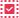
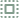

Eggs icon review
ANTZ Rounded pilot batch: every icon in the Eggs module. Line and filled at 16, 24 and 48px (48px sits on a tile), next to the old mobile SVGs they replace. Icons are inlined from library/line and library/filled when this sheet was generated. Old SVGs load live from app/public/current.
| Icon | Line 16 · 24 · 48 | Filled 16 · 24 · 48 | Metaphor | Old SVG |
|---|---|---|---|---|
eggEggdraft |
Base egg. Every egg icon reuses this geometry. | |||
egg_addAdd eggdraft |
Egg + add badge (bottom-right, 2px cut). | |||
egg_collectedEgg collecteddraft |
Egg + check badge. | |||
egg_discardedEgg discardeddraft |
Egg + close badge (pair with the Error colour role). | |||
egg_goldenFertile / special eggdraft |
Egg + 4-point sparkle badge = special / fertile. | |||
egg_infertileInfertile eggdraft |
Egg with a 45° slash, egg cut 2px either side. | |||
egg_clutchEgg clutchdraft |
Two medium eggs, the back one tucked behind with a 2px gap. | |||
egg_nestEgg in nestdraft |
Medium egg resting in a concentric cradle arc (nest). | |||
egg_nurseryEgg nurserydraft |
Small egg under an incubator hood. | |||
egg_hatchedHatched eggdraft |
Empty broken shell: lower part of the base egg with a 45° zigzag rim. | |||
chick_hatchedHatched chickdraft |
Chick head (eye, beak) rising out of a V-split shell. | |||
select_allSelect alldraft |
Dashed frame around a rounded square. |   |
||
siteSitedraft |
Tall and low building on a ground line, with windows. | |||
locationLocationdraft |
Map pin (existing example icon). |